Building a Multi-sensorial Interface II.
2021.08-2021.10
Info.
Sensory workshop
and interface implementation
Methods.
· Sensory workshop
· Qualitative coding
· Interface Design
· Mechanical Prototyping
· quantitative analysis
Background.
Prototyping the interface into everyday design to
receive public reactions.
Process Overivew
1. Sensory Framework construction → 2. Sensory workshop → 3. Interface design → 4. prototype implementation→ 5. Public testing → 6. Quantitative and qualitative analysis.
Audio-visual prototype can be seen from here
the messy prototype was produced.
Dissecting an aroma diffuser
Agonizing the Servo motors
Using ultrasonic sensor

hooking up the
arduino humidifier module
Self-ording kiosk machine had multi-sensorial interface implemented at an expo.
92 participants tried the machine out of which 43 were food neophobic!
 
 Baseline and endline Food Familiarity pre and post experiment:
highly significant difference found in food familarity among the multi-sensorial interface group

Willingness to try, satisfaction level and familiarity Mean± SE:
significance found in multi-sensorial group

Qualitative Interface Analysis
Results indicated that
the idea of receiving all non-taste sensory information prior to tasting the food item is phenomenal. This drives me to conduct further research on whether this framework would work with other unfamiliar items (or with familar items) in subsequent multisensory environments, while streamlining the prototype.
•
•
•
please read more in the soon-to-be published paper: "Multi-sensorial interface increases food familarity" below.
Non-tasting element exposure has been an emerging theory to be effective for food neophobia for years, but it was yet to be experimented. Especially since mere sensory exposure without taste stimuli meant that people cannot have mouth contact with food, there existed suspicion to how effective it will be. However, this study had shown that multi-sensorial exposure through vision, sound, smell, and touch can elicit higher willingness to try and considerably improved food familiarity at a certain novel item.
After the construction of the sensory framework, a professional’s consultation was received through an online call. A nutrition and education professional assessed the workshop and theme as rational and informative education-wise. She had commented that exposing foods through a multisensory interface can simultaneously be an education on technology uses on younger audiences, and not just a food education.
Most participants established that a multi-sensorial experience gives an opportunity for an objective decision making, better understanding on the novel food and drastically improved familiarity. Along with government regulations, sensory stimulation and manipulation could be used to restrict unhealthy foods and evoke curiosity on healthy foods, and to help the sensorially impaired via non-tasting elements.
this is me awkwardly pointing at nothing after 2 weeks of experiment; the scenery at the expo certainly paid off :)